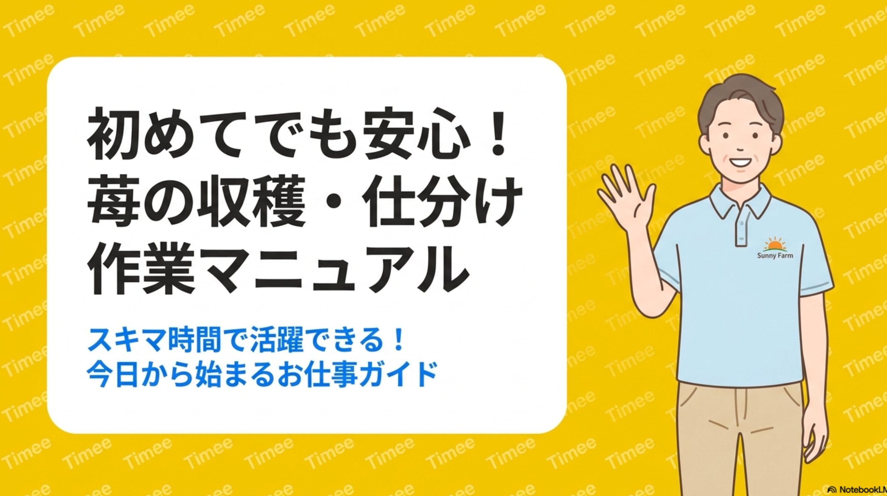

A
黄色背景 × イラスト

🎨 DESIGN PROMPT — A
【カラー指定（厳守）】 ・背景カラーは #FFD700（RGB: 255,215,0）を厳密に使用し、RGB値の変更・明度調整・彩度調整・透過・グラデーション・影・減光処理を一切行わず、必ず単色ベタ塗りで完全一致させること。 ・文字色は #212121(本文・見出し)、#FFFFFF(暗色背景上のみ)。 ・アクセントカラーは #007AFF、警告・注意喚起カラーは #FF3B30。 ・視認性確保のため、黄背景に白文字等の低コントラスト組み合わせは避けること。 【デザイン】 ・黄色・黒・白を基調とする。 ・簡潔な図解とイラストを使用し、情報を整理して見やすく配置する。 【トーン＆マナー】 ・初めての方でも安心できる優しい伴走型のトーン(煽る表現は避ける)。 【強調表示】 ・注意喚起には赤色(#FF3B30)や目立つアイコンを使用してメリハリをつける。 【画像生成(スタッフイラスト)】 ・実写風画像は使用せず、必ず「淡い水色のポロシャツとチノパン」を着たスタッフのフラットでやさしいタッチのイラスト(親しみやすいキャラクター風)を生成して挿入する。 ・線は均一でやわらかく、彩度は中程度に抑え、黄色背景と調和する配色にすること。 ・写真調・3D・リアル系の描写は禁止。 ・黄色くて丸いキャラクターは登場させないこと。 【コピー防止用の透かし(全スライド共通)】 ・全スライドの背景全面に「Timee」という文字を半透明の白(#FFFFFF)で透かしとして配置すること。 ・配置角度は左下から右上に向けて約-30度の斜め配置。 ・タイル状(格子状)に等間隔で繰り返し配置し、スライド全面を覆うこと。 ・1文字あたりのフォントサイズは小さめ(目安: 18〜24pt程度)、不透明度は薄め(目安: 10〜15%)に設定し、本文の可読性を妨げないこと。 ・フォントはサンセリフ体(Helvetica、Arial、Noto Sans等)を使用。 ・透かしはコンテンツ・図解・イラストの背面に配置し、前面要素の視認性を最優先すること。